About Cafe Ragoon
「ラグーン」とは、自然に囲まれた浅い湖を指します。
波の影響を受けにくく、静かで穏やかな湖です。
Cafe Ragoonはお客様にとってホッとくつろぐことができる、
心静まる空間をご提供いたします。
「ラグーン」とは、自然に囲まれた浅い湖を指します。
波の影響を受けにくく、静かで穏やかな湖です。
Cafe Ragoonはお客様にとってホッとくつろぐことができる、
心静まる空間をご提供いたします。